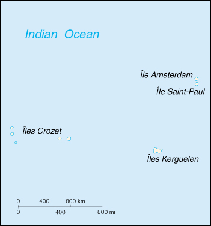

Antarctic Lands (overseas territory of France)
![[Country Flag of French Southern and Antarctic Lands]](../flags/fs-lgflag.jpg)
| French Southern and Antarctic Lands (overseas territory of France) |
|
       |  | |
| Geography |
Location: south of Africa, islands in the southern Indian Ocean, about equidistant between Africa, Antarctica, and Australia; note - French Southern and Antarctic Lands includes Ile Amsterdam, Ile Saint-Paul, Iles Crozet, and Iles Kerguelen in the southern Indian Ocean, along with the French-claimed sector of Antarctica, "Adelie Land"; the US does not recognize the French claim to "Adelie Land"
Geographic coordinates: 43 00 S, 67 00 E
Map references: Antarctic Region
Area:
total:
7,781 sq km
land:
7,781 sq km
water:
0 sq km
note:
includes Ile Amsterdam, Ile Saint-Paul, Iles Crozet and Iles Kerguelen; excludes "Adelie Land" claim of about 500,000 sq km in Antarctica that is not recognized by the US
Area - comparative: slightly less than 1.3 times the size of Delaware
Land boundaries: 0 km
Coastline: 1,232 km
Maritime claims:
exclusive economic zone:
200 nm from Iles Kerguelen only
territorial sea:
12 nm
Climate: antarctic
Terrain: volcanic
Elevation extremes:
lowest point:
Indian Ocean 0 m
highest point:
Mont Ross on Iles Kerguelen 1,850 m
Natural resources: fish, crayfish
Land use:
arable land:
0%
permanent crops:
0%
permanent pastures:
0%
forests and woodland:
0%
other:
100%
Irrigated land: 0 sq km (1993)
Natural hazards: Ile Amsterdam and Ile Saint-Paul are extinct volcanoes
Environment - current issues: NA
Geography - note: remote location in the southern Indian Ocean
| People |
Population:
no indigenous inhabitants
note:
in 1997, there were about 100 researchers whose numbers vary from winter (July) to summer (January) (July 2000 est.)
| Government |
Country name:
conventional long form:
Territory of the French Southern and Antarctic Lands
conventional short form:
French Southern and Antarctic Lands
local long form:
Territoire des Terres Australes et Antarctiques Francaises
local short form:
Terres Australes et Antarctiques Francaises
Data code: FS
Dependency status: overseas territory of France since 1955; administered from Paris by High Commissioner of the Republic Brigitte GIRARDIN (since 25 March 1998), assisted by Secretary General Jean-Yves HERMOSO (since NA)
Administrative divisions: none (overseas territory of France); there are no first-order administrative divisions as defined by the US Government, but there are 3 districts named Ile Crozet, Iles Kerguelen, and Iles Saint-Paul et Amsterdam; excludes "Adelie Land" claim in Antarctica that is not recognized by the US
Legal system: NA
Diplomatic representation in the US: none (overseas territory of France)
Diplomatic representation from the US: none (overseas territory of France)
Flag description: the flag of France is used
| Economy |
Economy - overview: Economic activity is limited to servicing meteorological and geophysical research stations and French and other fishing fleets. The fish catches landed on Iles Kerguelen by foreign ships are exported to France and Reunion.
Budget:
revenues:
$18 million
expenditures:
$NA, including capital expenditures of $NA
| Transportation |
Ports and harbors: none; offshore anchorage only
Merchant marine:
total:
72 ships (1,000 GRT or over) totaling 2,892,911 GRT/5,165,713 DWT
ships by type:
bulk 7, cargo 5, chemical tanker 10, container 9, liquified gas 6, petroleum tanker 24, refrigerated cargo 1, roll-on/roll-off 10
note:
a subset of the French register allowing French-owned ships to operate under more liberal taxation and manning regulations than permissible under the main French register (1999 est.)
Airports: none
| Military |
Military - note: defense is the responsibility of France
| Transnational Issues |
Disputes - international: "Adelie Land" claim in Antarctica is not recognized by the US